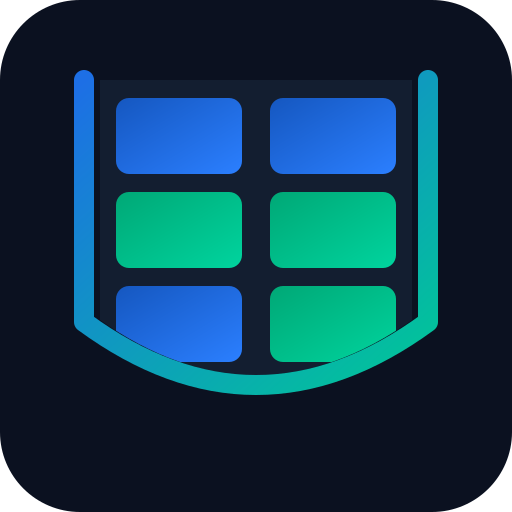
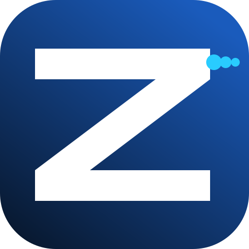

Projects
Linxr is the one app for Linux on Android, and Vizxr is its Kubernetes IDE. Pockr, Zyvr and Kubxr have been merged into Linxr.
Linxr
Linux, containers, k3s & PBXA full Alpine Linux VM inside QEMU on Android — real shell, SSH, containers, Kubernetes and a desktop GUI, on any arm64 phone with zero root. Now includes Pockr, Zyvr and Kubxr.
- FastTrack OCI (podman/crun) or Docker containers
- 1-click Marketplace: k3s, Asterisk PBX, Ollama, Nginx, PostgreSQL…
- Linux desktop GUI (X11, XFCE4) in the app
- Multi-tab SSH terminal and Virtio-9P shared storage
Vizxr
Kubernetes IDE for AndroidManage local and remote Kubernetes clusters from your phone. Connects to Linxr’s k3s on localhost:6443 or to AKS, GKE and EKS via kubeconfig.
- Lens-style resource inspector and events feed
- Live CPU and memory sparklines
- CRD explorer and Helm release rollback
- Log streaming, pod exec and YAML editor

Pockr
Merged into LinxrStandalone Pockr app is deprecated. All Docker container management capabilities, container dashboards, and log streaming have been natively merged into Linxr under the Containers tab.
- Pull & run any Docker image
- Real-time container logs
- Terminal into the Alpine VM host
- Configurable vCPU + RAM (1–4 cores, 512 MB–4 GB)

Zyvr
Merged into Linxr
Standalone Zyvr app is deprecated. The Asterisk 20 PBX now installs from the Linxr Marketplace,
as a container (zyvr-docker) or a native Alpine service (zyvr-native).
- Asterisk 20 with PJSIP driver
- SIP extension management (create, delete, list)
- Live call monitor + hangup
- WebRTC/SIP.js support via WSS on 8089
Kubxr
Merged into LinxrStandalone Kubxr Kubernetes node is deprecated. Run k3s from the Linxr Marketplace and manage it with Vizxr.
- k3s with cgroup2 and /dev/kmsg support
- TLS handshake down from ~11 s to ~15 ms
- API on localhost:6443 for Vizxr